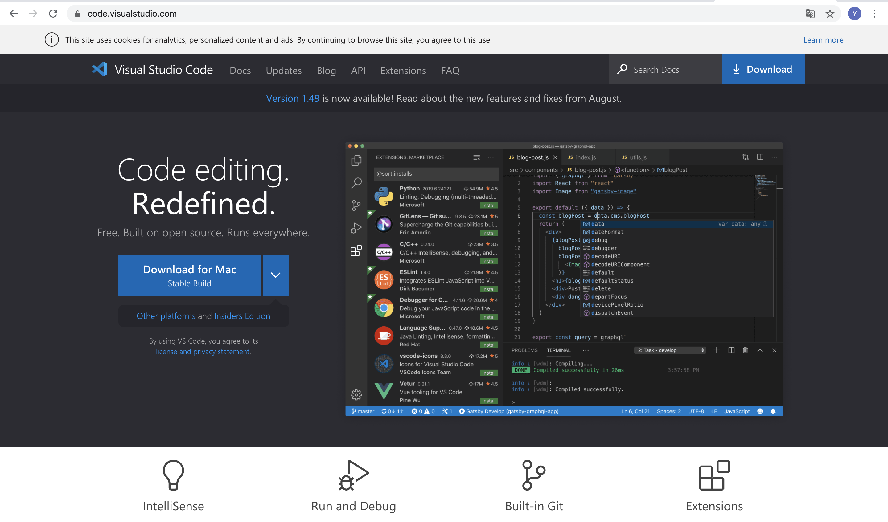
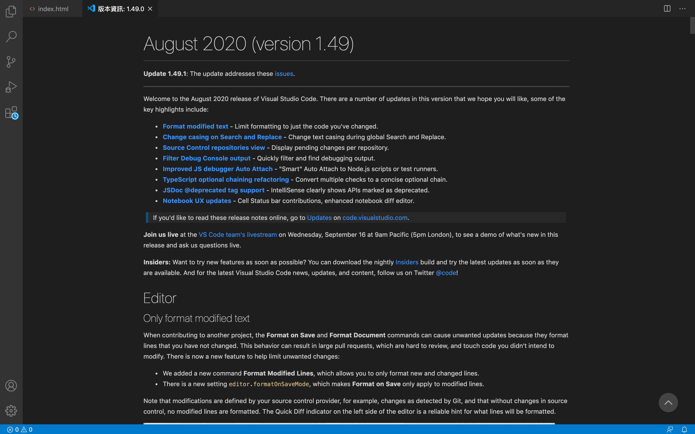
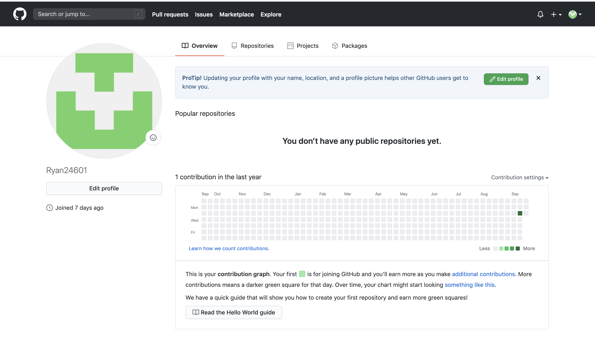
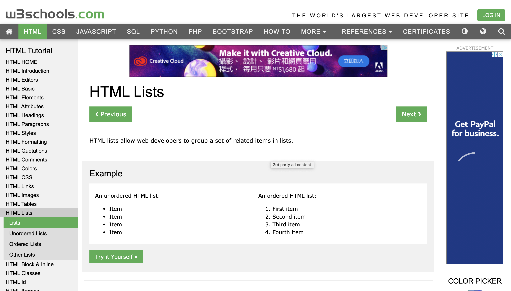

<!DOCTYPE html>
<html lang="zh-TW">

<head>
    <meta charset="UTF-8">
    <!--unicode萬國碼 -->
    <meta name="viewport" content="width=device-width, initial-scale=1.0">
    <!--網頁畫面大小-->
    <title>HW0：前端網站的開發環境建置 / 利用Github建立個人網站</title>
</head>

<body>

    <h1 style="text-align:center;">W0：前端網站的開發環境建置 / 利用Github建立個人網站</h1>


    <p style="text-align: center;">
        這是我第一次上前端設計，老師當天快速的介紹了程式編輯器 ; 主要功能是用來編輯及檢視程式碼。<br>
        當天老師介紹的編輯器為VS Code。VS Code是由微軟開發，支援Windows/MacOS/Linux的編輯器。

    </p>


    <p style="text-align: center;">
        直接搜尋VS Code就可以找到官網。可直接從官網免費下載。</p>
    <div style="margin-left: 20%;">  </div>
    >
    <!---我把img放在一個方塊(div)裡面，然後再去設定這個方塊的位置。我把他的左邊邊界設定在整個畫面的25％。-->

    <p style="text-align: center;">
        由於我先前已經安裝過VS Code，這是安裝好打開後的畫面。<br>
        我當前的版本為1.49.0。
    </p>


    <div style="margin-left: 20%;">  </div>


    <h2 style="text-align:center;">延伸模組</h1>

        <p style="text-align:center;">
            老師當天介紹了幾個實用的延伸模組。在選擇模組時，需要注意下載量及評分。<br>
            由於許多模組的名字可能只相差了幾個字母或大小寫。在挑選時需特別注意。</p>

        <div style="margin-left: 20%;"> 
        </div>

        <p style="text-align: center;"> 老師上課時有提到beautify這個延伸模組。這款擴充功能支援以下幾種常見的網頁原始碼：javascript、JSON、CSS、Sass 和
            HTML，功能為美化原始碼</p>

        <div style="margin-left: 20%;"> 
        </div>


        <p style="text-align: center;"> open in browser延伸模組<br>可以在瀏覽器查看html文件。</p>

        <div style="margin-left: 20%;"> 
        </div>


        <p style="text-align: center;"> open in default browser延伸模組，<br>按下ctrl+1，即可在瀏覽器開啟網頁。</p>

        <div style="margin-left: 20%;"> </div>

        <p style="text-align: center;">
            GitHub是透過Git進行版本控制的軟體原始碼代管服務平台，由GitHub公司的開發者<br>
            Chris Wanstrath、PJ Hyett和Tom Preston-Werner使用Ruby on Rails編寫而成。在這裡可以交流專案，達成良循環。<br>
            之後的作業也會使用github繳交。
        </p>

        <div style="margin-left: 20%;"> 
        </div>

        <p style="text-align: center;">
            當天老師介紹了這個教學網站，除了有最基礎的html語法外，也有其他程式語言的基本教學。<br>
            老師說道現在科技變化太快，很多東西需要靠自學補齊。我認爲這是現在的趨勢，也覺得這個網站非常好用。
        </p>


</body>


</html>